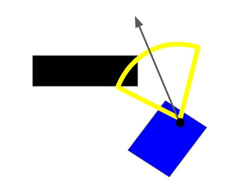
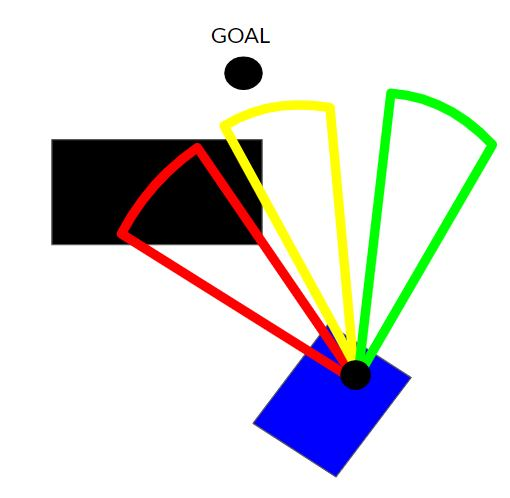
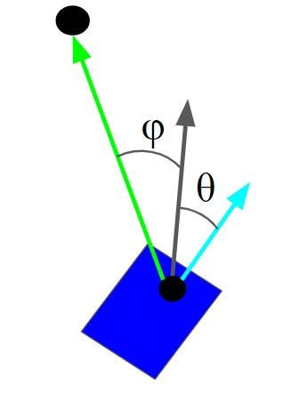
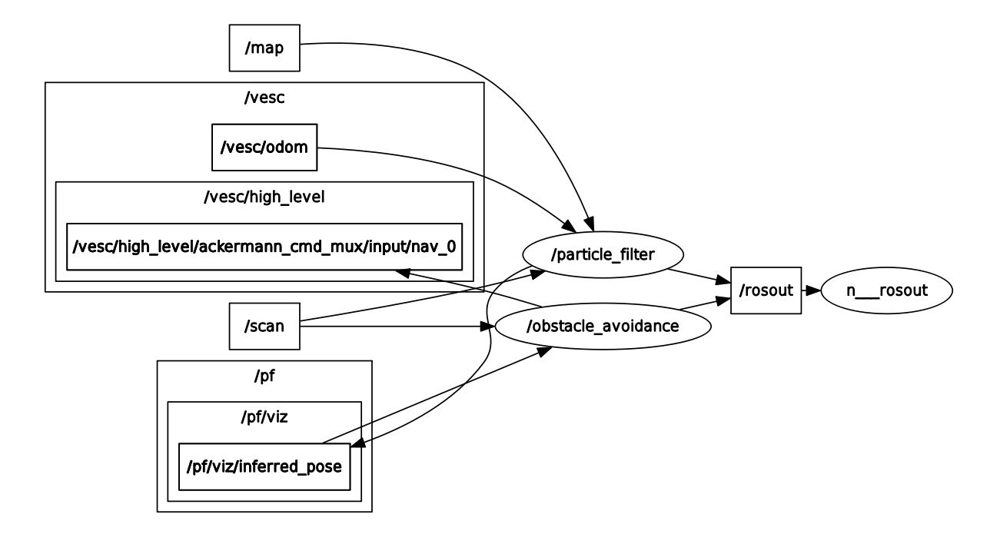
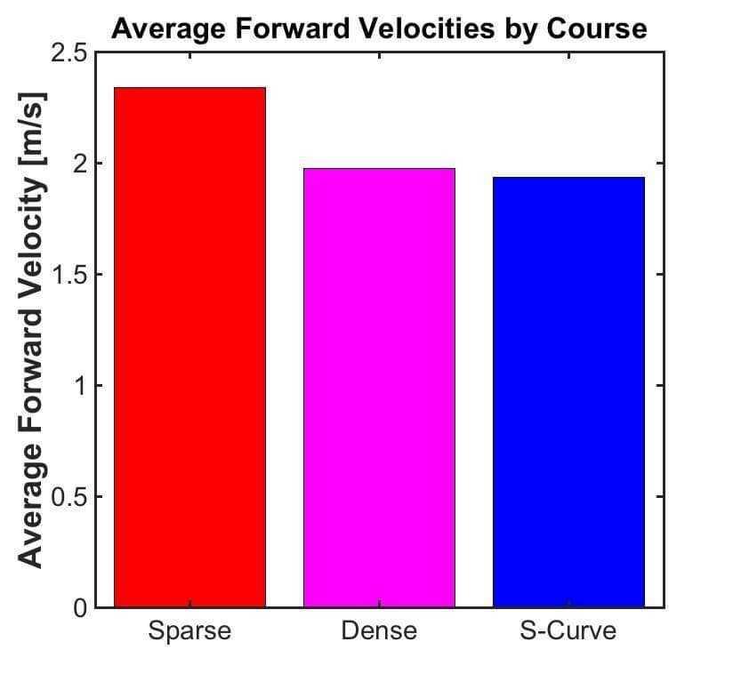

Final Project: High Speed Obstacle Avoidance
Table of Contents
- Overview and Motivation (Raul)
- Strategies and Ideas
- Parameter Tuning
- ROS Implementation (Abbie)
- Experimental Results (Kyle)
1) Overview and Motivation
Fast obstacle avoidance is an important problem in robotics, as even known environments are often times populated with objects that must be quickly reacted to. This is made more difficult when obstacle locations are not known beforehand, making dynamic decision-making required for a robot to successfully navigate. We wanted to develop a robust algorithm that would be able to navigate through a complex field obstacles on a path towards a goal. We considered a few different strategies before finding success on an algorithm that swept through the car's laser scan data and decided on a direction to turn in based on a combination of different factors, including clearance from obstacles, magnitude of the required change in heading, and the angle towards the goal. After tuning this algorithm, we were able to consistently navigate through fields of unknown obstacles, even when presented with sharp turns and high speeds.
2) Strategies and Ideas
2.1) Mapping and A*
Our initial idea was to create a graph representing the Stata basement without any obstacles. We would then run the A* algorithm on this map to calculate a path from the start to the goal. As the car drove through the course, its LIDAR would detect obstacles. From the laser scan data the car would calculate obstacle locations and use them to update the map graph, removing nodes corresponding to spaces that were found to be occupied. A* would then be run again as the map was updated, creating a path that would weave through the obstacles. We would potentially formalize this process by using dedicated mapping tools such as gmap or cartographer, which uses laser scan data to create an occupancy grid. However, after looking into this process in more detail, we discovered that it would be much too slow for fast obstacle avoidance - gmap in particular updates only approximately every five seconds. Knowing that we needed to make decisions much more quickly than this, we decided to go with a different approach.
2.2) Greedy Optimal Heading
A second option for our algorithm involves greedy decision making rather than planning. This algorithm checks sections of the laser scan data closest to the direction of the goal and makes two layers of checks to find the most fitting angle. First, we take a large angle of scans called the "safety" section around one heading. We then check the number of scans which fall under a short threshold. If too many scans fall under this threshold, we mark the section as having immediate danger and remove it from the racecar's possible headings.
 $ \textbf{ [Figure 1] - Triggered Safety Scan: } \text{A diagram of a heading (arrow) and safety scan (yellow) which intersects with an obstacle more than 10\% and will therefore disqualify the heading. }$If a section passes this first layer, we analyze a narrower slice and assign a score based on 3 parameters. Firstly, we check the proportion of numbers greater than some distant threshold (approximately five times the distance of the shorted "safety" distance). Second, we check the angle between the proposed section and the scan the goal. This parameter ensures we consistently move toward the goal as much as possible. Finally, we check the angle between the current heading and proposed section of the scan, which helps maintain the stability of our path and reduce oscillations which can slow progress and can lead to collision. Weighting and comparing these scores across all the headings gives us an optimal direction in which to steer.
 $ \textbf{[Figure 2 ] - Clearance Scans: } \text{Three clearance scans. The one in red has a safety score of 0, the one in green has a score of 1, and the one in yellow has a score between 0 and 1.}$  $ \textbf{[Figure 3 ] - Angle Based Scores: } \text{Three clearance scansAngle Scores: } \text{Diagram of metrics involving heading angle. Theta represents the angle between the current heading and proposed heading. Phi represents the angle between the proposed heading and alngle towards goal.}$We then use an stabilized Ackermann steering model to approach the point chosen. While our algorithm relies largely on the laser scan data alone, having a rudimentary understanding of our location on the map remains necessary. Specifically, maintaining a general understanding of our heading was important for the purposes of knowing our angle to the goal using particle filter localization.
2.3) Comparison of Strategies
We considered a number of different qualities of each of our strategies when choosing which algorithm to implement, including time to develop, robustness, and effectiveness at high speeds. Mapping is a harder problem to tackle than locally optimal greedy heading, but we also thought that the algorithm would be more robust to potential changes in the course. We knew that locally optimal greedy heading would require a lot of time to tune parameters, so the development times were equivalent. However, when comparing mapping with A* to locally optimal greedy heading, we found that while mapping was more robust in certain cases and required less tuning, the algorithm ran too slowly for the speed at which we wanted to maneuver the obstacles. Because locally optimal greedy heading worked directly with the laser scan data with no processing required, the algorithm is able to run at a much faster speed. For both algorithms, there was a consideration taken into account between the car's average forward velocity and performance of the algorithm.
3) Parameter Tuning
3.1) Particle Filter Tuning
The addition of unknown obstacles to the map made localization more difficult, as there was now a much greater number of laser scans that would not match the map. Additionally, if the car got too close to an obstacle, a large portion of laser scan would be occupied by the obstacle, severely disturbing the car's ability to localize. To compensate for this, we raised the pshort value in the particle filter sensor model from 0.07 to 0.40, mostly taking away from phit. In essence, this change makes the algorithm expect more scans under that which the map indicates. We also made sure to tune our algorithm to minimize the chance that the car would end up too close to an obstacle. With these changes we were able to achieve much more consistent localization, although the car would still need to be reset after enough time had passed.
3.2) Algorithm Tuning
Our algorithm gave us many variables to tune, which included: Ackermann steering parameters, obstacle clearance thresholds, angle sweeping parameters, car acceleration limits, and weights on the cost function that determined which angle we would turn in. We wanted an algorithm that would be robust to a wide variety of courses and initial conditions. After significant testing and trial and error, we were able to reach a set of parameters that provided this robustness. We had a few key insights during this process. Namely, we needed to lower our weight on the car's desire to choose a direction close to its current heading. This allowed the car to turn much more aggressively. To compensate for this, we made the car's velocity a function of the angle difference between the car's current heading and its calculated next heading, which made it slow down during sharp turns. Additionally, we had to cap the car's acceleration at a relatively low threshold, because if the car traveled for a long time and then encountered a very sharp turn, it would still not be able to slow down enough to successfully turn. By limiting the car's acceleration, we prevented this scenario in the majority of cases we would be expecting.
| Parameter | Value |
|---|---|
| Clearance Angle | 30$^{\circ}$ |
| Safety Angle | 60 $^{\circ}$ |
| Angle Between Headings | 5 $^{\circ}$ |
| Safety Distance | 0.5 m |
| Clearance Distance | 2.5 m |
| Maximum Velocity | 3 m/s |
| Metric | Value |
|---|---|
| Clearance Weight | 15 |
| Goal Angle Weight | 1 |
| Heading Angle Weight | 7 |
4) ROS Implementation
The main ROS node active in our algorithm is named /obstacle_avoidance. This node takes in localization data as a PoseStamped message from the topic /pf/viz/inferred_pose and laser scan data from the topic /scan. It then outputs data as an Ackermann message to the topic /vesc/high_level/ackermann_cmd_mux/input/nav_0. While these topics envelop the technical functionality of our system, we also utilize the topics /heading and /safety as visualization tools. /heading displays are determined by our algorithm as a cone of the angle defined as our section size and length of our clearance distance threshold. Similarly, /safety is a cone displaying the angle, direction, and threshold of our safety section.
 $ \textbf{[Figure 4 ] - RQT Graph: } \text{A graph representing the nodes and topics described above. }$5) Experimental Results
The main way we tested our implementation of fast obstacle avoidance was using the metric of average forward velocity. To do this, we defined three different courses: sparse (few obstacles and many large areas of empty space), dense (many obstacles and not much free space), and s-curve (a course that forces the robot to maneuver in tight turns, shown below). For each of these course setups, we ran five trials timing the robot driving through the course and calculating its average forward velocity. Below in Figure 5 are the results from these runs. The sparse course had the fastest average forward velocity at 2.3 m/s averaged between the trials and a top forward velocity of 2.52 m/s, while the s-curve course had the slowest average forward velocity at 1.9 m/s averaged between the trials and a top forward velocity of 2.07 m/s.
 $\textbf{[Figure 5] } \text{Average forward speeds for the three types of courses created for testing: sparse, dense, and s-curve.}$Insert video of s-curve course